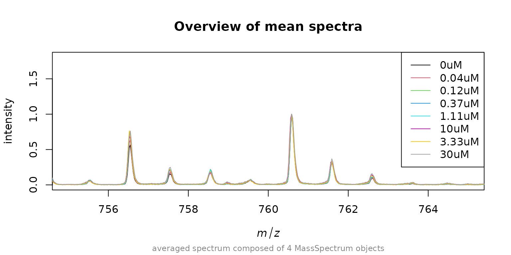
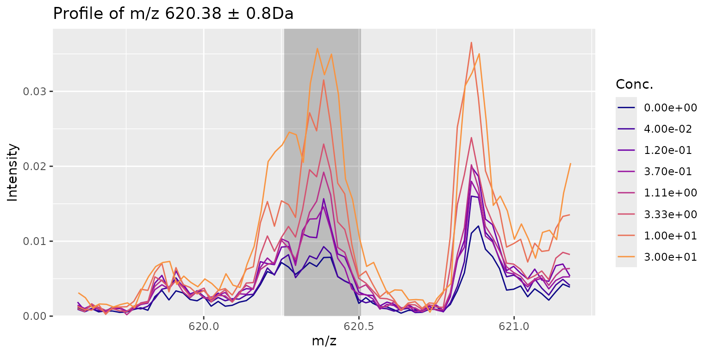

Introduction
In this document we will apply an automated screening for possible candidate signals that show a response to treatment with a compound. For details how to do the experimental part check out our Nature Protocols publication Unger 2021 “Label-free Cell Assays of Compound Uptake and Drug Action using MALDI-TOF Mass Spectrometry”. Briefly, cells were treated with the following concentration of a compound: 0, 0.04, 0.12, 0.37, 1.11, 3.33, 10, 30 uM. After incubation the cells were washed, transferred to a MALDI target plate and matrix was applied. For each concentration 4 spots were applied which means that we also have 4 “measurement replicates” for each concentration.
The most important function in this package is fitCurve(). It does not only fit the dose response curve and compute score values but it also does most of the necessary steps needed to prepare the data for fitting like normalization and alignment. In this tutorial we want to first look at each of this steps individually and then apply the fitCurve() function the helps us combine all of them.
For the sake to keep this package small, the spectra used as an example here were trimmed to 400-900 Da mass-range and stored in a compact form as example data.
Example data and quality check
library(MALDIcellassay)
library(MALDIquant)
#>
#> This is MALDIquant version 1.22.3
#> Quantitative Analysis of Mass Spectrometry Data
#> See '?MALDIquant' for more information about this package.
data("Blank2022spec")First we will check the spectra for general quality.
MALDIquant::plot(Blank2022spec[[1]], main = "0uM, replicate 1")Preprocessing
The baseline of the spectra already looks ok but for the sake of this tutorial we will apply a baseline correction. But first we want so save the names of the spectra (which are the concentrations used to treat the cells). Also to get a better overview of the data we compute the mean spectra of each concentration (there are 4 measurement replicates for each concentration) and plot them around m/z 760 as we want to use this signal to normalize and also as lock mass.
conc <- as.numeric(names(Blank2022spec))
spec_prc <- MALDIquant::removeBaseline(Blank2022spec)
names(spec_prc) <- conc
avg <- MALDIquant::averageMassSpectra(spec_prc, labels = conc)
MALDIquant::plot(avg[[1]], main = "Overview of mean spectra", xlim = c(755, 765))
for(i in 2:length(avg)) {
MALDIquant::lines(avg[[i]], col = i)
}
legend("topright", legend = paste0(names(avg), "uM"), col = 1:8, lty=1)We see that the alignment of the spectra is quite good but the intensity varies for the peak around m/z 760. To get best results its necessary to normalize the spectra to each other. One way is to add a standard to each measurement spot (internal standard). This is not always possible and another option is to use endogenous peaks with high abundance like the signal around 760 m/z. As an example we will now find out the m/z deviation to this signal for each spectrum. First we need to detect the peaks, then we convert the peaks to a data.frame and finally we use getMzShift() to find the mass shift in each spectrum.
peaks <- MALDIquant::detectPeaks(Blank2022spec, method = "SuperSmoother", SNR = 5)
names(peaks) <- names(Blank2022spec)
mz_shift <- getMzShift(peaks = peaks, targetMz = 760.585, tol = 0.1)
#> found mz 760.585 in 32 / 32 spectra
#> 11:06 mzshift was -0.0796625 in mean and 0.0828 abs. max.
summary(mz_shift$mzshift)
#> Min. 1st Qu. Median Mean 3rd Qu. Max.
#> -0.08280 -0.08280 -0.08280 -0.07966 -0.08280 -0.05770As we already suspected the shift is quite small. Now lets use it to align the spectra
spec_align <- shiftMassAxis(Blank2022spec, mz_shift$mzshift)Now that we have aligned spectra the next step is to normalize them. Also here, a internal standard would be great but as we dont have one we again use the m/z 760 endogenous signal. First we extract the intensities for each spectrum of this signal and then we use it as a normalization factor.
peaks_align <- MALDIquant::detectPeaks(spec_align, method = "SuperSmoother", SNR = 3)
norm <- getNormFactors(peaksdf = peaks2df(peaks_align), targetMz = 760.585, tol = 0.1)
summary(norm$norm_factor)
#> Min. 1st Qu. Median Mean 3rd Qu. Max.
#> 7949 12842 14492 14099 16145 19570
spec_rdy <- normalizeByFactor(spec_align, norm$norm_factor)As a final check we now plot again the aligned and normalizes mean spectra for each concentration.
avg_rdy <- MALDIquant::averageMassSpectra(spec_rdy, labels = conc)
MALDIquant::plot(avg_rdy[[1]], main = "Overview of mean spectra", xlim = c(755, 765))
for(i in 2:length(avg_rdy)) {
MALDIquant::lines(avg_rdy[[i]], col = i)
}
legend("topright", legend = paste0(names(avg), "uM"), col = 1:8, lty=1)
High variance filtering
As expected we find our spectra to be perfectly aligned and normalized to 760.585. Now we can again detect peaks, bin them and compose a intensity matrix of all peaks.
peaks_rdy <- MALDIquant::detectPeaks(avg_rdy, method = "SuperSmoother", SNR = 3)
peaks_rdy <- MALDIquant::binPeaks(peaks_rdy)
intmat <- MALDIquant::intensityMatrix(peaks_rdy, avg_rdy)
dim(intmat)
#> [1] 8 211We get a intensity matrix with 211 peaks in total. The next step is to screen for high variant peaks.
Fit Curve
We end up with 20 candidate peaks for which we want to fit a IC50 curve. Lets do the fitting for one exemplary signal.
concLog <- log10(unique(conc))
if(any(concLog == -Inf)) {
concLog[which(concLog == -Inf)] <- (min(concLog[which(!concLog == -Inf)])-1)
}
resp <- nplr::convertToProp(y = intmat[,10])
model <- nplr::nplr(x = concLog, y = resp, useLog = FALSE, npars = 4)
title <- paste0("m/z =", round(as.numeric(colnames(intmat)[12]), 2))
plot(model, main = title)And with that we are finished! As said during the introduction we did each step manually.
MALDIcellassay Workflow
To do what we did in an automated way for each signal of interest use the following function.
Note, that we use the pre-processed spectra (baseline removed).
Baseline removal and smoothing can (if needed) be performed with
MALDIquant.
res <- fitCurve(spec = spec_prc,
SinglePointRecal = TRUE,
normMeth = "mz",
varFilterMethod = "none",
normMz = 760.585,
alignTol = 0,
normTol = 0.1,
verbose = FALSE)
#> Warning in value[[3L]](cond): m/z 760.585 failed. Re-trying with npar='all' and additional noise (mean=0, sd=1e-4).
res
#> ------MALDIassay object------
#>
#> Including 8 concentrations,
#> ranging from 0 to 30 .
#> Normalization on m/z 760.58 ± 0.1 Da.
#>
#> Single point recalibation on 760.58 with 0.1 Da tolerance.
#> Avg. mass shift before recal.: -0.0797 Da. Max abs. shift: 0.0828 Da.
#> Avg. mass shift after recal. : 0 Da. Max abs. shift: 0 Da.
#>
#> Found 249 peaks (SNR 3) and 249 high variance peaks
#> using variance filtering method: none.
#>
#> Top5-features based on Fold-Change and R²:
#> mz mzIdx pEC50 R2 log2FC SSMD V' Z' CRS
#> 1 620.383 111 -0.31 0.97 3.23 5.56 0.82 0.37 85.4
#> 2 662.422 134 -0.62 0.99 3.00 4.11 0.91 0.13 72.0
#> 3 634.398 120 -0.48 0.99 2.61 4.15 0.89 0.13 71.7
#> 4 810.604 208 -0.62 1.00 1.79 5.03 0.92 0.27 71.4
#> 5 811.602 209 -0.64 0.99 1.90 4.68 0.90 0.22 68.8Screen the results for interesting signals
We can also extract a data.frame with all the peaks and quality
metrics. We actually got a sneak peak on the results above from the
show method of the MALDIassay-class. From
there we can see that mzIdx 111 (m/z
620.4) scored the highest CRS score with around 85%.
stats <- getPeakStatistics(res, summarise = TRUE) Depending on our experimental setup (targeted i.e. we know our m/z of interest or un-targeted) we might also want to look at V’, Z’ and log2FC individually.
When we take a look at our highest hit we observe a good fit of the curve (V’), high distance between the lower and the upper part of the curve (log2FC) combined with low variance (Z’). Still we dont have a sigmoidal shape so either we did not use the right concentration range or we need to look deeper into the data.
plotPeak(res, mzIdx = 111, tol = 0.8)
plotCurves(res, mzIdx = 111, errorbars = "sd")Here we might have a slightly better curve at a lower CRS. The CRS is intended to quickly filter out signals that make no sense at all but in makes sense to visually check the top hits.
plotPeak(res, mzIdx = 193, tol = 0.8)
plotCurves(res, mzIdx = 193, errorbars = "sd")Session Info
sessionInfo()
#> R version 4.4.1 (2024-06-14)
#> Platform: x86_64-pc-linux-gnu
#> Running under: Ubuntu 22.04.4 LTS
#>
#> Matrix products: default
#> BLAS: /usr/lib/x86_64-linux-gnu/openblas-pthread/libblas.so.3
#> LAPACK: /usr/lib/x86_64-linux-gnu/openblas-pthread/libopenblasp-r0.3.20.so; LAPACK version 3.10.0
#>
#> locale:
#> [1] LC_CTYPE=C.UTF-8 LC_NUMERIC=C LC_TIME=C.UTF-8
#> [4] LC_COLLATE=C.UTF-8 LC_MONETARY=C.UTF-8 LC_MESSAGES=C.UTF-8
#> [7] LC_PAPER=C.UTF-8 LC_NAME=C LC_ADDRESS=C
#> [10] LC_TELEPHONE=C LC_MEASUREMENT=C.UTF-8 LC_IDENTIFICATION=C
#>
#> time zone: UTC
#> tzcode source: system (glibc)
#>
#> attached base packages:
#> [1] stats graphics grDevices utils datasets methods base
#>
#> other attached packages:
#> [1] MALDIquant_1.22.3 MALDIcellassay_0.4.47.9000
#>
#> loaded via a namespace (and not attached):
#> [1] sass_0.4.9 utf8_1.2.4 generics_0.1.3
#> [4] tidyr_1.3.1 nplr_0.1-7 digest_0.6.37
#> [7] magrittr_2.0.3 evaluate_0.24.0 grid_4.4.1
#> [10] fastmap_1.2.0 jsonlite_1.8.8 purrr_1.0.2
#> [13] fansi_1.0.6 viridisLite_0.4.2 scales_1.3.0
#> [16] XML_3.99-0.17 textshaping_0.4.0 jquerylib_0.1.4
#> [19] cli_3.6.3 rlang_1.1.4 MALDIquantForeign_0.14.1
#> [22] munsell_0.5.1 withr_3.0.1 base64enc_0.1-3
#> [25] cachem_1.1.0 yaml_2.3.10 tools_4.4.1
#> [28] parallel_4.4.1 dplyr_1.1.4 colorspace_2.1-1
#> [31] ggplot2_3.5.1 forcats_1.0.0 vctrs_0.6.5
#> [34] readBrukerFlexData_1.9.2 R6_2.5.1 lifecycle_1.0.4
#> [37] fs_1.6.4 ragg_1.3.2 pkgconfig_2.0.3
#> [40] desc_1.4.3 readMzXmlData_2.8.3 pkgdown_2.1.0
#> [43] pillar_1.9.0 bslib_0.8.0 gtable_0.3.5
#> [46] glue_1.7.0 systemfonts_1.1.0 highr_0.11
#> [49] xfun_0.47 tibble_3.2.1 tidyselect_1.2.1
#> [52] knitr_1.48 farver_2.1.2 htmltools_0.5.8.1
#> [55] labeling_0.4.3 rmarkdown_2.28 svMisc_1.2.3
#> [58] compiler_4.4.1